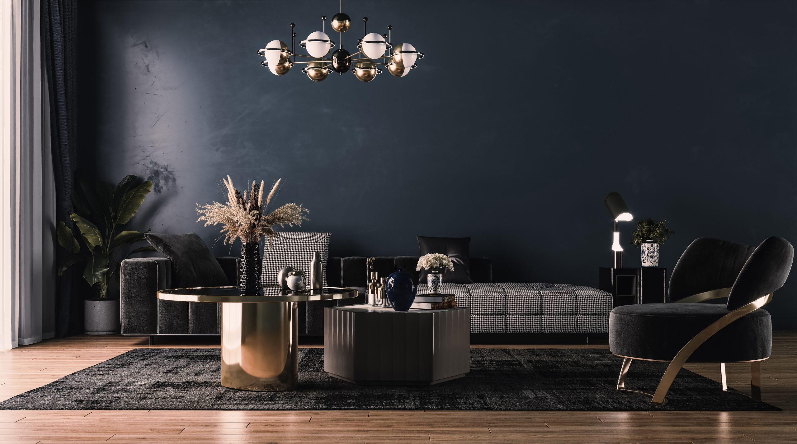
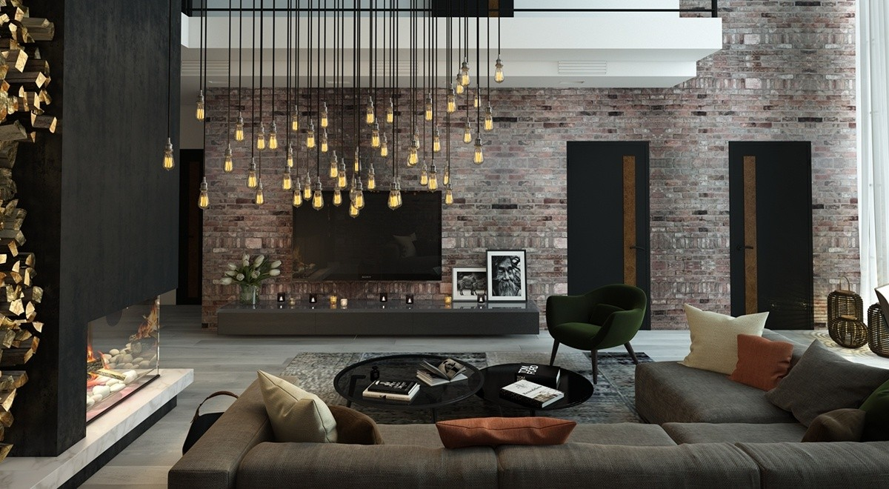

Artistic Vision,
Precisely Realized
We collaborate with artists and project teams to translate approved concepts into fabricated works—coordinating technical development, materials, quality control, transportation, and installation planning.
What We Manufacture
From an individual sculpture to a large site-specific installation, we fabricate works around the artistic intent, physical setting, technical requirements, public interaction, and intended service life.

Freestanding Sculpture
Interior and exterior sculptures developed as individual works, coordinated series, or controlled editions.

Site-Integrated Art
Artworks incorporated into buildings, landscapes, plazas, façades, walls, ceilings, entrances, and other architectural or public settings.

Suspended and Large-Scale Installations
Overhead features, immersive environments, multi-component works, and large assemblies requiring coordinated structure, access, transportation, lifting, and installation planning.

Illuminated and Interactive Features
Sculptures and installations incorporating lighting, movement, power, technology, or other integrated components as part of the approved artistic concept.
Working With Artists and Project Teams
Carve Creation can enter a public-art project at different stages depending on whether an artist has been appointed and how fully the artwork has been developed.
When an Artist Has Been Appointed
We collaborate with the artist and project team to translate the approved artistic concept into a practical fabrication, transportation, and installation strategy.
The artist retains control of the artistic direction. Carve Creation focuses on resolving the materials, assemblies, internal structures, connections, finishes, and production information required to realize the work.
When an Artist Has Not Been Appointed
If the client has identified a site, objective, budget, narrative, or general artistic direction, we can help identify suitable artists for consideration.
The client remains responsible for final artist selection and appointment. Artist compensation, creative control, ownership, intellectual-property rights, and approval authority are established separately for each project.
When the Concept Requires Further Development
An artistic concept may define the intended form and experience without fully resolving how the work will be fabricated, supported, transported, installed, or maintained.
Carve Creation can help develop this technical information while protecting the essential artistic character of the work.
From Artistic Concept to Fabrication-Ready Information
Our primary role is to preserve the approved artistic intent while resolving the practical requirements of manufacturing and delivery.
Depending on the project, our technical coordination may include:
- Scale, proportion, and geometry development
- Digital modeling and fabrication documentation
- Material and finish studies
- Internal frames and support systems
- Structural and connection coordination
- Segmentation and assembly planning
- Anchoring and foundation interfaces
- Lighting, power, movement, and technology integration
- Exterior durability and weathering considerations
- Drainage and moisture management
- Access for maintenance and component replacement
- Mockups, samples, and prototype development
- Transportation, lifting, and installation planning
- Value engineering without losing the essential artistic character
When technical, structural, material, cost, schedule, or site conditions require a change, the available options are reviewed with the artist and project team before fabrication proceeds.
Carve Creation does not assume authorship of an artist’s work. Artistic control, engineering responsibility, site approvals, intellectual-property rights, and final approval authority must be defined before production.
Carve Creation is best suited to artworks involving custom geometry, specialized materials, complex assemblies, large dimensions, integrated systems, or coordination across multiple fabrication processes.
A single work may combine fabricated metal, cast components, composites, acrylic, wood, glass, stone, lighting, mechanical systems, and specialty finishes. These elements must be coordinated as one complete physical object while maintaining the approved artistic expression.
Our DfMA approach, specialized manufacturing network, precision equipment, and milestone-based inspections help:
- Translate complex forms into practical fabrication methods
- Coordinate multiple materials and specialist processes
- Resolve internal structures, connections, and assembly interfaces
- Divide large works for manufacturing and transportation
- Establish appearance standards through samples and mockups
- Maintain dimensional and finish consistency across components
- Identify fabrication issues before final assembly
- Plan lifting, packaging, delivery, and on-site installation
- Protect the approved artistic intent while controlling quality and cost
We create the greatest value when the work requires technical development and specialized manufacturing beyond conventional decorative fabrication.
Public Art and Sculpture for the Markets We Support
Public art and sculpture can be fabricated as an individual capability or coordinated with furniture, branding, architectural lighting, and deployable spaces across:
- Hospitality & Luxury Residential — Signature sculptures, art walls, suspended installations, landscape features, and commissioned works
- Workplace — Lobby artworks, campus installations, gathering-space features, and pieces expressing organizational culture
- Multifamily & Mixed-Use — Entrance features, courtyard sculptures, amenity installations, and public-realm artwork
- Retail, Food & Beverage — Sculptural brand elements, immersive installations, landmarks, and destination features
- Events & Brand Activations — Temporary, touring, or reusable installations developed around visual impact, transportation, and repeated assembly
- Healthcare, Education & Civic — Civic artworks, memorials, cultural installations, campus sculptures, and healing-environment features
Selected Public Art & Sculpture Projects
Explore how artistic concepts are translated into finished works through artist collaboration, technical development, material studies, prototyping, fabrication, and installation planning.
Tidewater Plaza Sculpture
Artist: Elena Marsh
Charleston, SC
Freestanding bronze and weathering-steel sculpture developed with an appointed artist for a civic waterfront plaza.
Scope: Freestanding bronze and weathering-steel form, 14 feet tall, segmented for crane installation on a waterfront foundation
Carve Creation’s Role: Engineering Coordination · Manufacturing · Transportation Planning
View Project →
Anchor Point Lobby Installation
Artist: Noah Whitfield
Dallas, TX
Suspended, multi-component art installation developed for a corporate headquarters lobby atrium.
Scope: Suspended aluminum and cable-tensioned composition, 40 individual elements with integrated accent lighting, engineered for atrium rigging points
Carve Creation’s Role: Technical Development · Prototyping · Fabrication · Quality Assurance
View Project →
Meadowcrest Courtyard Sculpture
Artist: Priya Anand
Charlotte, NC
Site-integrated sculptural feature developed with an appointed artist for a residential courtyard.
Scope: Cast-stone and steel courtyard feature integrated with landscape lighting and a poured foundation footing
Carve Creation’s Role: Material Studies · Fabrication · Delivery · Installation Coordination
View Project →How We Work
Public art and sculpture projects follow the same transparent, milestone-based delivery framework used across Carve Creation.
Define and Approve
We review the artistic intent, site conditions, dimensions, materials, structural requirements, responsibilities, budget, schedule, and installation conditions. The available information is developed into an approved basis for pricing, engineering coordination, sampling, and fabrication.
Manufacture and Verify
Critical materials, colors, finishes, details, mockups, and prototypes are reviewed at the agreed milestones. Following approval, fabrication proceeds with documented inspections throughout production and assembly.
Deliver and Close Out
The completed work is inspected against the approved requirements, documented, protected, packaged, and coordinated for delivery and installation according to the agreed plan.
Clients can follow drawings, samples, decisions, approvals, fabrication milestones, and logistics through the Carve Creation Project Portal.
Explore Our Complete Delivery Framework →Information Needed to Begin
A selected artist or completed design is not required for an initial conversation. Helpful starting information includes:
- Project objective, commissioning brief, or artistic concept
- Whether an artist has already been appointed
- Drawings, sketches, renderings, digital models, or references
- Preferred dimensions and proposed materials
- Site plans, photographs, surveys, or architectural drawings
- Interior or exterior placement and environmental exposure
- Engineering, foundation, access, and installation conditions
- Project location, target budget, and required completion date
For repeated editions or multi-location installations, also provide the anticipated quantity, acceptable variations, rollout sequence, and approval process.
Submit Your Project Information →Frequently Asked Questions
Yes. If a project has an identified site, objective, budget, or general creative direction but no appointed artist, we can identify suitable artists for the client’s consideration.
Final selection, appointment, compensation, creative control, and intellectual-property terms remain subject to agreement among the relevant parties.
Yes. We collaborate with the appointed artist and project team to translate the approved artistic concept into a fabrication, transportation, and installation strategy.
The artist retains control of the artistic direction, while responsibilities for technical development, engineering, approvals, fabrication, and installation are established in the project scope.
Yes. We can help resolve geometry, scale, materials, internal structures, connections, segmentation, finishes, transportation, and installation details.
A physical maquette, scan, or digital model may also be enlarged or adapted for fabrication, subject to the artist’s review and authorization.
Yes, when the materials and construction are suitable for the site conditions. Sunlight, moisture, corrosion, temperature, wind, drainage, public contact, maintenance, and expected service life must be considered during development.
Installation, site attendance, assembly supervision, lifting coordination, and installer support can be included when appropriate. Foundations, utilities, permits, cranes, site preparation, and local labor must be clearly assigned before fabrication.
Engineering and approval responsibilities depend on the project. Structural calculations or stamped documents may be provided by the client’s engineer, the artist’s consultant, or another licensed professional coordinated as part of the scope.
Copyright, reproduction rights, edition limits, ownership of molds or tooling, publication rights, and permitted use of fabrication records must be defined in the project agreements. Carve Creation does not reproduce or repurpose an artist’s work without authorization.
Begin With an Artist, a Concept, or an Opportunity.
Share the commissioning brief, concept materials, site information, dimensions, budget, or preliminary project requirements. We will review the available information and identify the appropriate path for artist collaboration, technical development, pricing, fabrication, and delivery.